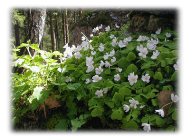
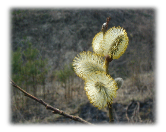
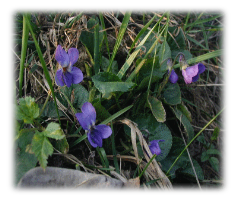
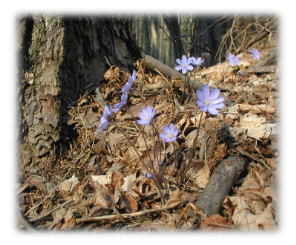
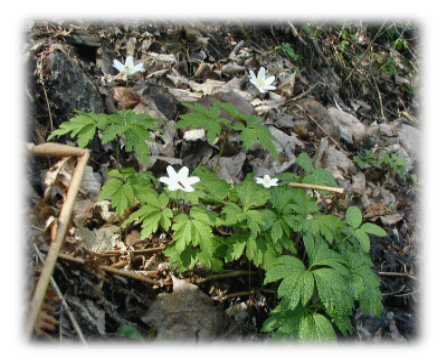

Первоцветы
Первый, чистый, живой!
Каждый год наступает момент, когда всё живое после долгой суровой зимы пробуждается к жизни. Момент, когда на ещё мерзлую землю впервые попадает тёплый солнечный луч сквозь корочку тающего снега. Момент, когда матушка земля откликается на ласку далекого Солнца первым растением, первым цветком, названным первоцветом.
Он — первый, чистый, живой! Он, встречающий весну своим великолепием, первый вестник наступившего обновления.

Цветёт кислица на руинах королевского охотничьего дома в Красном лесу
Так в жизни каждого человека есть первое растение, первый цветок, позвавший поклониться земле, чтобы почувствовать её аромат, чтобы насладиться совершенством форм и красок, которое сотворила она в этом чуде. Только тогда, в этом чуде, человек прочтёт то, о чём кричал ему до этого весь мир, о единстве и великом творчестве природы.




Берегите первоцветы
Пусть в жизни наших детей будут первоцветы, пусть они склоняются над ними, чтобы прочесть то, что не смогли, не успели прочесть их родители!